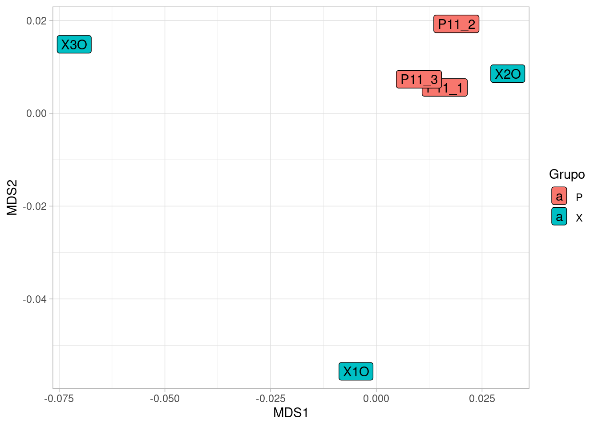
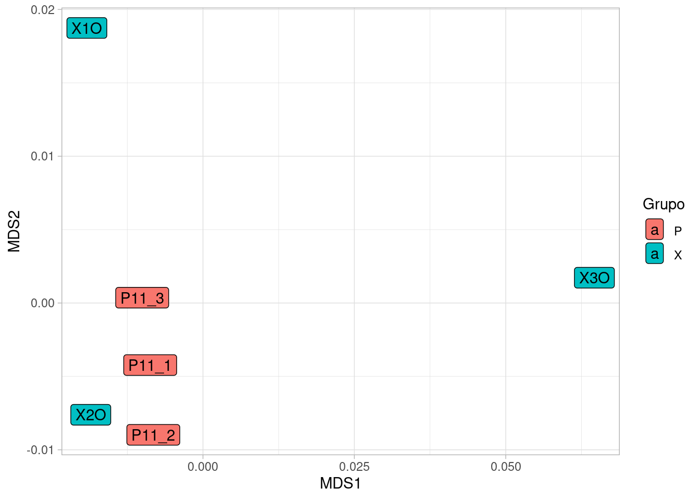

library(DESeq2)
library(tidyverse)
library(ggrepel)
library(ggsci)RNASeq Navarra
https://irycisbioinfo.github.io/ReportNavarraRNASeq/
RNASeq Report
All the data of this analysis can be found in https://github.com/irycisBioinfo/ReportNavarraRNASeq
Load Data
Data from primary analisis workflow https://nf-co.re/rnaseq/3.14.0/ are loaded among metadata.
reads_genes <- read_tsv("/storage2/Hincode/S-60-47-61-2024-RNASeq_0240725_LH00206_0043_A22MLN2LT3/navarra/results_strand/star_salmon/salmon.merged.gene_counts_length_scaled.tsv")
reads_transcripts <- read_tsv("/storage2/Hincode/S-60-47-61-2024-RNASeq_0240725_LH00206_0043_A22MLN2LT3/navarra/results_strand/star_salmon/salmon.merged.transcript_counts.tsv")
ids <- read_tsv("/storage2/Hincode/S-60-47-61-2024-RNASeq_0240725_LH00206_0043_A22MLN2LT3/navarra/results_strand/star_salmon/salmon_tx2gene.tsv", col_names = c("Transcrip_ID","Gene_ID","Gene_Name"))
metadata <- read_csv("/storage2/Hincode/S-60-47-61-2024-RNASeq_0240725_LH00206_0043_A22MLN2LT3/navarra/metadata.csv")mart <- biomaRt::useMart(biomart = "ENSEMBL_MART_ENSEMBL",
dataset = "hsapiens_gene_ensembl",
host = 'https://www.ensembl.org')
ttg <- biomaRt::getBM(
attributes = c("ensembl_transcript_id","ensembl_gene_id","external_gene_name", "description",
"entrezgene_id","gene_biotype","transcript_biotype"),
mart = mart)Quality Control from the primary analysis could be found https://irycisbioinfo.github.io/ReportNavarraRNASeq/multiqc/star_salmon/multiqc_report.html
The analysis workflow aligns the reads to the reference genome’s transcripts. This allows us to perform analysis at two levels: the transcript level and the gene level, which provides a summary of all transcripts associated with each gene.
Transcript Level
Preparing data format
table_sum <- reads_transcripts %>%
pivot_longer(names_to = "Sample", values_to = "counts", -(tx:gene_id)) %>%
group_by(tx,gene_id) %>%
mutate(TotalGeneCounts = sum(counts),
TotalZerosCounts = sum(counts==0))
table_sum %>% ggplot(aes(x = TotalGeneCounts)) + geom_histogram() + geom_vline(xintercept = 10)+scale_x_log10()Seen the distribution of the read counts we decide to filter those transcript with less than 10 reads or that are 0 in more than 3 samples.
table_counts <- table_sum %>%
ungroup() %>%
filter(TotalGeneCounts > 10) %>%
filter(TotalZerosCounts < 3) %>%
dplyr::select(tx,Sample,counts) %>%
pivot_wider(names_from = Sample, values_from = counts, values_fill = 0) %>%
column_to_rownames("tx") %>%
round() %>%
as.matrix()Creating a regression model and performing Differential Expression Analysis
dds_transcript <-DESeqDataSetFromMatrix(countData = table_counts,
colData = metadata %>% column_to_rownames("Sample"),
design = ~Grupo) converting counts to integer modeWarning in DESeqDataSet(se, design = design, ignoreRank): some variables in
design formula are characters, converting to factorsdds_transcript <- DESeq(dds_transcript,sfType = "poscounts", fitType = "mean")estimating size factorsestimating dispersionsgene-wise dispersion estimatesmean-dispersion relationshipfinal dispersion estimatesfitting model and testingQuality Control
Check the normalization and DE results
reads_transcripts %>% pivot_longer(names_to = "Sample", values_to = "counts", -(tx:gene_id)) %>%
group_by(Sample) %>%
summarise(TotalCounts = sum(counts)) %>%
full_join(metadata) %>%
ggplot(aes(x= Sample, y = TotalCounts, fill = Grupo)) + geom_col() + coord_flip() + theme_light()+ labs(title = "Raw Data")Joining with `by = join_by(Sample)`
counts(dds_transcript, normalized = T) %>% as_tibble(rownames = "tx") %>% pivot_longer(names_to = "Sample", values_to = "counts", -tx) %>%
group_by(Sample) %>%
summarise(TotalCounts = sum(counts)) %>%
full_join(metadata) %>%
ggplot(aes(x= Sample, y = TotalCounts, fill = Grupo)) + geom_col() + coord_flip() + theme_light() + labs(title = "Normalize Data")Joining with `by = join_by(Sample)`
mds <- vegan::metaMDS(counts(dds_transcript, normalized = T) %>% t())Square root transformation
Wisconsin double standardization
Run 0 stress 0
Run 1 stress 0
... Procrustes: rmse 0.0291793 max resid 0.04557835
Run 2 stress 9.548865e-05
... Procrustes: rmse 0.2081779 max resid 0.290838
Run 3 stress 0.0003889057
... Procrustes: rmse 0.1453818 max resid 0.2098872
Run 4 stress 5.617026e-05
... Procrustes: rmse 0.2247752 max resid 0.4649492
Run 5 stress 8.098997e-05
... Procrustes: rmse 0.2104377 max resid 0.3823652
Run 6 stress 9.942537e-05
... Procrustes: rmse 0.08345882 max resid 0.1133512
Run 7 stress 0
... Procrustes: rmse 0.06501365 max resid 0.1200745
Run 8 stress 0
... Procrustes: rmse 0.07343435 max resid 0.1365268
Run 9 stress 0
... Procrustes: rmse 0.1403157 max resid 0.2655851
Run 10 stress 9.327804e-05
... Procrustes: rmse 0.2119679 max resid 0.4193939
Run 11 stress 9.734295e-05
... Procrustes: rmse 0.07975466 max resid 0.1116435
Run 12 stress 2.928156e-05
... Procrustes: rmse 0.1756845 max resid 0.3418646
Run 13 stress 4.334659e-05
... Procrustes: rmse 0.1720234 max resid 0.3282976
Run 14 stress 0
... Procrustes: rmse 0.1460413 max resid 0.2309672
Run 15 stress 9.944218e-06
... Procrustes: rmse 0.1606056 max resid 0.2815027
Run 16 stress 0
... Procrustes: rmse 0.09459989 max resid 0.185337
Run 17 stress 0
... Procrustes: rmse 0.0997192 max resid 0.1768916
Run 18 stress 8.52166e-05
... Procrustes: rmse 0.2131113 max resid 0.3332029
Run 19 stress 9.190148e-05
... Procrustes: rmse 0.2257334 max resid 0.461816
Run 20 stress 9.751302e-05
... Procrustes: rmse 0.08435188 max resid 0.1137656
*** Best solution was not repeated -- monoMDS stopping criteria:
1: no. of iterations >= maxit
19: stress < sminWarning in vegan::metaMDS(counts(dds_transcript, normalized = T) %>% t()):
stress is (nearly) zero: you may have insufficient datamds$points %>%
as.data.frame() %>%
rownames_to_column("Sample") %>%
inner_join(metadata) %>%
ggplot(aes(x = MDS1, y = MDS2, fill = Grupo, label =Sample)) + geom_label() +
theme_light()Joining with `by = join_by(Sample)`
The X Group seens more heteregenous than the group P. This get worse the quality of the Differential Expression Test.
Differential Expression Test
resultsNames(dds_transcript)[1] "Intercept" "Grupo_X_vs_P"de_test <- results(dds_transcript) %>%
as_tibble(rownames = "Transcrip_ID") %>% inner_join(ids)Joining with `by = join_by(Transcrip_ID)`de_test%>%
mutate(sig = ifelse(padj < 0.005,"Significative","No-Significative")) %>%
mutate(label = ifelse(sig == "Significative",Gene_Name,NA)) %>%
ggplot(aes(x= log2FoldChange,
y = -log10(padj),
color = sig,
size = sqrt(baseMean),
label = label)) +
geom_point(alpha = 0.5) +
geom_text_repel(size = 2)+
scale_color_d3() +
theme_light() +
labs(title = "Volcano Plot Grupo_X_vs_P") Warning: Removed 7693 rows containing missing values or values outside the scale range
(`geom_point()`).Warning: Removed 94886 rows containing missing values or values outside the scale range
(`geom_text_repel()`).Warning: ggrepel: 49 unlabeled data points (too many overlaps). Consider
increasing max.overlaps
de_test%>%
mutate(sig = ifelse(padj < 0.005,"Significative","No-Significative")) %>%
mutate(label = ifelse(sig == "Significative",Gene_Name,NA)) %>%
ggplot(aes(x= baseMean,
y = log2FoldChange,
color = sig,
size = sqrt(baseMean),
label = label)) +
geom_point(alpha = 0.5) +
geom_text_repel(size = 1)+
scale_color_d3() +
scale_x_log10()+
theme_light() +
labs(title = "MA Plot Grupo_X_vs_P")Warning: Removed 7693 rows containing missing values or values outside the scale range
(`geom_point()`).Warning: Removed 94886 rows containing missing values or values outside the scale range
(`geom_text_repel()`).Warning: ggrepel: 13 unlabeled data points (too many overlaps). Consider
increasing max.overlapsVolcano and MA plot shown several transcript differential expressed. In order to see better this differences we plot all the comparison individually.
significativos <- de_test%>%
filter(padj < 0.005) %>% pull(Transcrip_ID)
counts(dds_transcript, normalized = T) %>%
as.data.frame() %>%
rownames_to_column("tx") %>%
filter(tx %in% significativos) %>%
pivot_longer(names_to = "Sample",values_to = "counts", -tx) %>%
inner_join(metadata) %>%
ggplot(aes(x = Grupo, y = counts, fill = Grupo)) + geom_boxplot() + facet_wrap(~tx, scales = "free_y") + scale_fill_d3() + theme_light()Joining with `by = join_by(Sample)`Funtional Annotation
To create a biological context for the differential expressed transcript we are traying to infer if there are some funtional annotation (GO Terms) or pathway (KEGG) over-represented in the transcript-set.
library(clusterProfiler)clusterProfiler v4.12.6 Learn more at https://yulab-smu.top/contribution-knowledge-mining/
Please cite:
T Wu, E Hu, S Xu, M Chen, P Guo, Z Dai, T Feng, L Zhou, W Tang, L Zhan,
X Fu, S Liu, X Bo, and G Yu. clusterProfiler 4.0: A universal
enrichment tool for interpreting omics data. The Innovation. 2021,
2(3):100141
Adjuntando el paquete: 'clusterProfiler'The following object is masked from 'package:purrr':
simplifyThe following object is masked from 'package:IRanges':
sliceThe following object is masked from 'package:S4Vectors':
renameThe following object is masked from 'package:stats':
filterlibrary(org.Hs.eg.db)Cargando paquete requerido: AnnotationDbi
Adjuntando el paquete: 'AnnotationDbi'The following object is masked from 'package:clusterProfiler':
selectThe following object is masked from 'package:dplyr':
selectsig_transcripts <- de_test %>%
inner_join(ttg, by = c("Transcrip_ID" = "ensembl_transcript_id")) %>% filter(padj < 0.005) %>%
dplyr::select(entrezgene_id) %>%
distinct() %>%
drop_na() %>%
pull(entrezgene_id)
GO_enrichment <- enrichGO(gene =sig_transcripts,
OrgDb = org.Hs.eg.db,
ont = "ALL",
pAdjustMethod = "BH",
pvalueCutoff = 0.01,
qvalueCutoff = 0.05,
readable = TRUE)
if ((GO_enrichment %>% as.data.frame() %>% nrow()) > 0 )
{
barplot(GO_enrichment, showCategory = 20)
} else{
print("No enriched Pathways")
}[1] "No enriched Pathways"KEGG_enrichment <- enrichKEGG(gene = sig_transcripts,
organism = 'hsa',
pvalueCutoff = 0.05)Reading KEGG annotation online: "https://rest.kegg.jp/link/hsa/pathway"...Reading KEGG annotation online: "https://rest.kegg.jp/list/pathway/hsa"...if ((KEGG_enrichment %>% as.data.frame() %>% nrow()) > 0 )
{
barplot(KEGG_enrichment, showCategory = 20)
} else{
print("No enriched Pathways")
}[1] "No enriched Pathways"There are not over-represented funtional annotation or pathway.
Gene Level
At this point we repeat de analysis but at Gene Level.
table_sum <- reads_genes %>%
pivot_longer(names_to = "Sample", values_to = "counts", -(gene_id:gene_name)) %>%
group_by(gene_id) %>%
mutate(TotalGeneCounts = sum(counts),
TotalZerosCounts = sum(counts==0))
table_sum %>% ggplot(aes(x = TotalGeneCounts)) + geom_histogram() + geom_vline(xintercept = 10)+scale_x_log10()Warning in scale_x_log10(): log-10 transformation introduced infinite values.`stat_bin()` using `bins = 30`. Pick better value with `binwidth`.Warning: Removed 144900 rows containing non-finite outside the scale range
(`stat_bin()`).
table_counts <- table_sum %>%
ungroup() %>%
filter(TotalGeneCounts > 10) %>%
filter(TotalZerosCounts < 3) %>%
dplyr::select(gene_id,Sample,counts) %>%
pivot_wider(names_from = Sample, values_from = counts, values_fill = 0) %>%
column_to_rownames("gene_id") %>%
round() %>%
as.matrix()We use the same criteria to filter low quality genes.
dds_genes <-DESeqDataSetFromMatrix(countData = table_counts,
colData = metadata %>% column_to_rownames("Sample"),
design = ~Grupo) converting counts to integer modeWarning in DESeqDataSet(se, design = design, ignoreRank): some variables in
design formula are characters, converting to factorsdds_genes <- DESeq(dds_genes,sfType = "poscounts", fitType = "mean")estimating size factorsestimating dispersionsgene-wise dispersion estimatesmean-dispersion relationshipfinal dispersion estimatesfitting model and testingQuality Control
reads_genes %>% pivot_longer(names_to = "Sample", values_to = "counts", -(gene_id:gene_name)) %>%
group_by(Sample) %>%
summarise(TotalCounts = sum(counts)) %>%
full_join(metadata) %>%
ggplot(aes(x= Sample, y = TotalCounts, fill = Grupo)) + geom_col() + coord_flip() + theme_light()+ labs(title = "Raw Data")Joining with `by = join_by(Sample)`
counts(dds_genes, normalized = T) %>% as_tibble(rownames = "genes_id") %>% pivot_longer(names_to = "Sample", values_to = "counts", -genes_id) %>%
group_by(Sample) %>%
summarise(TotalCounts = sum(counts)) %>%
full_join(metadata) %>%
ggplot(aes(x= Sample, y = TotalCounts, fill = Grupo)) + geom_col() + coord_flip() + theme_light() + labs(title = "Normalize Data")Joining with `by = join_by(Sample)`
pca <- vegan::metaMDS(counts(dds_genes, normalized = T) %>% t())Square root transformation
Wisconsin double standardization
Run 0 stress 3.011127e-06
Run 1 stress 6.479562e-06
... Procrustes: rmse 0.1722707 max resid 0.2337154
Run 2 stress 9.960007e-05
... Procrustes: rmse 0.1717837 max resid 0.3605271
Run 3 stress 9.864728e-05
... Procrustes: rmse 0.09142828 max resid 0.1268886
Run 4 stress 9.846717e-05
... Procrustes: rmse 0.06694584 max resid 0.1107112
Run 5 stress 0.0002527055
... Procrustes: rmse 0.2839842 max resid 0.4818229
Run 6 stress 0
... New best solution
... Procrustes: rmse 0.1247765 max resid 0.2513806
Run 7 stress 9.870621e-05
... Procrustes: rmse 0.1013454 max resid 0.192716
Run 8 stress 8.199781e-05
... Procrustes: rmse 0.138157 max resid 0.1901614
Run 9 stress 9.471227e-05
... Procrustes: rmse 0.1359267 max resid 0.207019
Run 10 stress 9.618336e-05
... Procrustes: rmse 0.217148 max resid 0.3902685
Run 11 stress 9.473049e-05
... Procrustes: rmse 0.1148755 max resid 0.2127429
Run 12 stress 0.0007052933
Run 13 stress 9.536384e-05
... Procrustes: rmse 0.1207609 max resid 0.2144415
Run 14 stress 8.61864e-05
... Procrustes: rmse 0.1503647 max resid 0.2618885
Run 15 stress 9.920266e-05
... Procrustes: rmse 0.2216172 max resid 0.2976934
Run 16 stress 0.0007465923
Run 17 stress 0.276134
Run 18 stress 9.766822e-05
... Procrustes: rmse 0.1251696 max resid 0.1791651
Run 19 stress 0.0001227039
... Procrustes: rmse 0.2613389 max resid 0.4705428
Run 20 stress 6.484234e-05
... Procrustes: rmse 0.1479421 max resid 0.2603061
*** Best solution was not repeated -- monoMDS stopping criteria:
4: no. of iterations >= maxit
15: stress < smin
1: stress ratio > sratmaxWarning in vegan::metaMDS(counts(dds_genes, normalized = T) %>% t()): stress is
(nearly) zero: you may have insufficient datapca$points %>%
as.data.frame() %>%
rownames_to_column("Sample") %>%
inner_join(metadata) %>%
ggplot(aes(x = MDS1, y = MDS2, fill = Grupo, label =Sample)) + geom_label() +
theme_light()Joining with `by = join_by(Sample)`
We obtain the same results at heterogeneity level of the samples.
Differential Expression Test
resultsNames(dds_genes)[1] "Intercept" "Grupo_X_vs_P"de_test <- results(dds_genes) %>%
as_tibble(rownames = "Gene_ID") %>% inner_join(ids)Joining with `by = join_by(Gene_ID)`de_test%>%
mutate(sig = ifelse(padj < 0.01,"Significative","No-Significative")) %>%
mutate(label = ifelse(sig == "Significative",Gene_Name,NA)) %>%
ggplot(aes(x= log2FoldChange,
y = -log10(padj),
color = sig,
size = sqrt(baseMean),
label = label)) +
geom_point(alpha = 0.5) +
geom_text_repel(size = 1)+
scale_color_d3() +
theme_light() +
labs(title = "Volcano Plot Grupo_X_vs_P") Warning: Removed 5373 rows containing missing values or values outside the scale range
(`geom_point()`).Warning: Removed 183875 rows containing missing values or values outside the scale range
(`geom_text_repel()`).Warning: ggrepel: 29 unlabeled data points (too many overlaps). Consider
increasing max.overlaps
de_test%>%
mutate(sig = ifelse(padj < 0.01,"Significative","No-Significative")) %>%
mutate(label = ifelse(sig == "Significative",Gene_Name,NA)) %>%
ggplot(aes(x= baseMean,
y = log2FoldChange,
color = sig,
size = sqrt(baseMean),
label = label)) +
geom_point(alpha = 0.5) +
geom_text_repel(size = 1)+
scale_color_d3() +
scale_x_log10()+
theme_light() +
labs(title = "MA Plot Grupo_X_vs_P")Warning: Removed 5373 rows containing missing values or values outside the scale range
(`geom_point()`).Warning: Removed 183875 rows containing missing values or values outside the scale range
(`geom_text_repel()`).Warning: ggrepel: 29 unlabeled data points (too many overlaps). Consider
increasing max.overlapssignificativos <- de_test%>%
filter(padj < 0.01) %>% pull(Gene_Name)
counts(dds_genes, normalized = T) %>%
as.data.frame() %>%
rownames_to_column("Gene_Name") %>%
filter( Gene_Name %in% significativos) %>%
pivot_longer(names_to = "Sample",values_to = "counts", -Gene_Name) %>%
inner_join(metadata) %>%
ggplot(aes(x = Grupo, y = counts, fill = Grupo)) + geom_boxplot() + facet_wrap(~Gene_Name, scales = "free_y") + scale_fill_d3() + theme_light()Joining with `by = join_by(Sample)`In this case we only see two genes deferentially expresed.